<title>Lavanda Hills</title>
<meta name="claude:viewport-fit-sides" content="cover">
<link rel="preconnect" href="https://fonts.googleapis.com">
<link rel="stylesheet" href="https://fonts.googleapis.com/css2?family=Unbounded:wght@400;600;800&family=Manrope:wght@400;500;700&display=swap">
<style>
/* Layout: editorial scroll — arched hero image, then bands per floor; room colour scenarios as a three-card row */
:root{
  --bg:#FAF6F2; --surface:#F1E8E2; --fg:#2B1F26; --muted:#6E5C63; --line:#E4D7D0;
  --lavender:#A28BC9; --plum:#5E2A4A; --clay:#B4552F; --ochre:#D39A2C; --sage:#8D9A73; --cobalt:#25408F; --wine:#7A1F2E; --sand:#E8D7BF;
  --accent:#6D3A63;
  --display:"Unbounded",system-ui,sans-serif; --body:"Manrope",system-ui,-apple-system,sans-serif;
}
@media (prefers-color-scheme:dark){:root:not([data-theme="light"]){--bg:#1D1519;--surface:#291E24;--fg:#F4ECEE;--muted:#B9A8AF;--line:#3B2D34;--accent:#C9A6DA;color-scheme:dark}}
:root[data-theme="dark"]{--bg:#1D1519;--surface:#291E24;--fg:#F4ECEE;--muted:#B9A8AF;--line:#3B2D34;--accent:#C9A6DA;color-scheme:dark}
*{box-sizing:border-box}
body{background:var(--bg);color:var(--fg);font-family:var(--body);font-size:17px;line-height:1.6}
.wrap{max-width:1180px;margin:0 auto;padding-left:max(16px,env(safe-area-inset-left,0px));padding-right:max(16px,env(safe-area-inset-right,0px))}
h1,h2,h3{font-family:var(--display);text-wrap:balance;line-height:1.15;margin:0}
h2{font-size:clamp(26px,3.6vw,40px);font-weight:600}
h3{font-size:18px;font-weight:600}
p{margin:0;max-width:65ch}
.eyebrow{font-size:12px;letter-spacing:.14em;text-transform:uppercase;color:var(--accent);font-weight:700}
section{padding-block:72px;border-top:1px solid var(--line)}
.stack{display:flex;flex-direction:column;gap:16px}
img{display:block;max-width:100%;height:auto;border-radius:6px}
figure{margin:0;display:flex;flex-direction:column;gap:8px;min-width:0}
figcaption{font-size:14px;color:var(--muted)}

.hero{padding-block:40px 64px}
.hero-grid{display:grid;grid-template-columns:1fr 1.1fr;gap:48px;align-items:center}
.hero h1{font-size:clamp(44px,7vw,92px);font-weight:800;letter-spacing:-.02em}
.hero h1 span{color:var(--lavender)}
.lead{font-size:20px;color:var(--muted)}
.facts{display:flex;flex-wrap:wrap;gap:8px;margin-top:8px}
.facts span{font-size:14px;padding:6px 12px;border-radius:999px;background:var(--surface);font-variant-numeric:tabular-nums}
.hero img{aspect-ratio:1/1.05;object-fit:cover;width:100%;border-radius:240px 240px 6px 6px}

.palette{display:grid;grid-template-columns:repeat(8,1fr);gap:10px;margin-top:32px}
.sw{display:flex;flex-direction:column;gap:6px;min-width:0}
.sw i{display:block;aspect-ratio:3/4;border-radius:120px 120px 4px 4px}
.sw b{font-size:14px}
.sw small{font-size:12px;color:var(--muted);line-height:1.35}

.two{display:grid;grid-template-columns:1fr 1fr;gap:40px;align-items:start}
.rules{display:grid;grid-template-columns:repeat(2,1fr);gap:20px 32px}
.rules div{display:flex;flex-direction:column;gap:4px;padding-top:12px;border-top:2px solid var(--plum)}
.rules p{font-size:15px;color:var(--muted)}
.chips{display:flex;flex-wrap:wrap;gap:8px}
.chips span{font-size:14px;padding:6px 12px;border:1px solid var(--line);border-radius:999px}
.chips.no span{text-decoration:line-through;color:var(--muted)}

.pair{display:grid;grid-template-columns:1fr 1fr;gap:20px;margin-top:28px}
.trio{display:grid;grid-template-columns:repeat(3,1fr);gap:20px;margin-top:20px}
.trio img,.pair.crop img{aspect-ratio:4/5;object-fit:cover;width:100%}

.rooms{display:grid;grid-template-columns:repeat(3,1fr);gap:24px;margin-top:32px}
.room{display:flex;flex-direction:column;gap:12px;min-width:0}
.room img{aspect-ratio:4/5;object-fit:cover;width:100%;border-radius:160px 160px 6px 6px}
.dots{display:flex;gap:6px}
.dots i{width:22px;height:22px;border-radius:50%;border:2px solid var(--bg);box-shadow:0 0 0 1px var(--line)}
.room p{font-size:15px;color:var(--muted)}

.guest{display:grid;grid-template-columns:repeat(3,1fr);gap:24px;margin-top:28px}
.guest div{display:flex;flex-direction:column;gap:6px}
.guest p{font-size:15px;color:var(--muted)}

.note{background:var(--surface);border-radius:8px;padding:24px;display:flex;flex-direction:column;gap:10px}
.note ul{margin:0;padding-left:20px;display:flex;flex-direction:column;gap:6px;font-size:15px}
footer{padding-block:40px;font-size:13px;color:var(--muted);border-top:1px solid var(--line)}

@media (max-width:860px){
  .hero-grid,.two,.pair{grid-template-columns:1fr}
  .rooms,.guest,.trio{grid-template-columns:1fr}
  .palette{grid-template-columns:repeat(4,1fr)}
  .rules{grid-template-columns:1fr}
  section{padding-block:48px}
}
</style>

<header class="hero wrap">
  <div class="hero-grid">
    <div class="stack">
      <div class="eyebrow">Дизайн-концепция · вилла-отель</div>
      <h1>Lavanda <span>Hills</span></h1>
      <p class="lead">Luxury Mediterranean Eclectic. Роскошь не через сдержанность и бежевый, а через цвет, фактуру, дизайнерскую мебель, искусство и вид на лавандовые холмы.</p>
      <div class="facts"><span>3 номера с санузлами</span><span>2 этажа · 144 м²</span><span>3 приватных фурако</span><span>аренда номером или целиком</span></div>
    </div>
    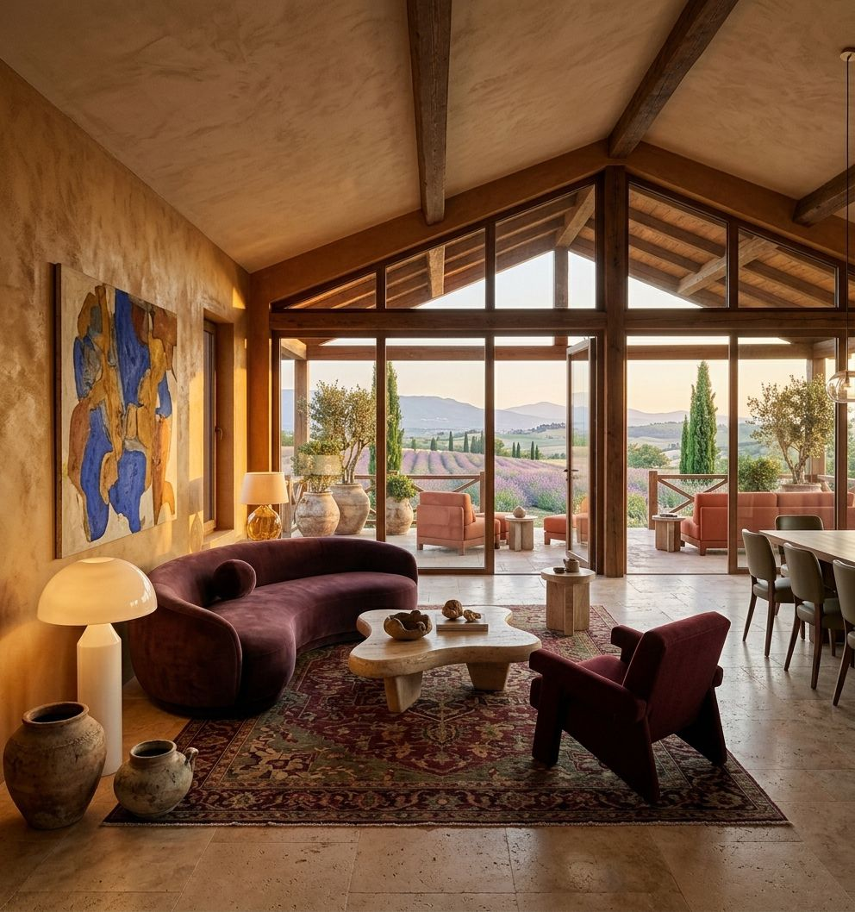
  </div>
</header>

<section class="wrap">
  <div class="two">
    <div class="stack">
      <div class="eyebrow">Идея</div>
      <h2>Вечный отпуск в европейском бутик-отеле</h2>
    </div>
    <div class="stack">
      <p>Современная средиземноморская эстетика с итальянскими и испанскими интонациями. Без привязки к одному стилю: современная мебель, винтаж, дизайнерские объекты и авторская керамика собраны так, будто их привозили из поездок.</p>
      <p>Цвет берём из пейзажа: лаванда и слива полей, жжёная глина земли, охра солнца, шалфей и олива холмов, кобальт вечерних гор. Тёплый молочный и песочный держат баланс, чтобы палитра оставалась благородной, а не кислотной.</p>
    </div>
  </div>

  <div class="palette" aria-label="Палитра">
    <div class="sw"><i style="background:var(--lavender)"></i><b>Лаванда</b><small>номер 1, ванная</small></div>
    <div class="sw"><i style="background:var(--plum)"></i><b>Слива</b><small>бархат, гостиная</small></div>
    <div class="sw"><i style="background:var(--clay)"></i><b>Жжёная глина</b><small>номер 2, кухня</small></div>
    <div class="sw"><i style="background:var(--ochre)"></i><b>Охра</b><small>стены лобби, акценты</small></div>
    <div class="sw"><i style="background:var(--sage)"></i><b>Шалфей</b><small>стулья, веранды</small></div>
    <div class="sw"><i style="background:var(--cobalt)"></i><b>Кобальт</b><small>номер 3, остров</small></div>
    <div class="sw"><i style="background:var(--wine)"></i><b>Вино</b><small>ковры, бархат</small></div>
    <div class="sw"><i style="background:var(--sand)"></i><b>Песок</b><small>травертин, баланс</small></div>
  </div>
</section>

<section class="wrap">
  <div class="two">
    <div class="stack">
      <div class="eyebrow">Принципы</div>
      <h2>Ярко, дорого, без визуального шума</h2>
      <div class="chips">
        <span>травертин</span><span>таделакт и известковая штукатурка</span><span>орех и дуб</span><span>бархат</span><span>лён</span><span>букле</span><span>глазурованная керамика ручной работы</span><span>латунь</span><span>алебастр</span><span>муранское стекло</span>
      </div>
      <div class="eyebrow" style="margin-top:12px">Исключаем</div>
      <div class="chips no">
        <span>ротанг и макраме</span><span>прованс и цветочные принты</span><span>лаванда в каждом предмете</span><span>серый и белый как основа</span><span>точечные светильники как единственный свет</span>
      </div>
    </div>
    <div class="rules">
      <div><h3>Цветовой сценарий на комнату</h3><p>У каждого номера своя пара цветов. Общие зоны собирают все цвета, но на тёплом охристом фоне.</p></div>
      <div><h3>Цвет живёт в фактуре</h3><p>Штукатурка, бархат, глазурь и камень дают глубину. Ровной краски и глянцевого пластика нет.</p></div>
      <div><h3>Один скульптурный предмет</h3><p>В каждой зоне есть главный объект: изогнутый диван, стеклянная люстра, каменная ванна. Остальное ему не мешает.</p></div>
      <div><h3>Свет слоями</h3><p>Алебастровые бра, муранские лампы, напольные «грибы», фонари на верандах. Вечером свет подчёркивает фактуры.</p></div>
    </div>
  </div>
</section>

<section class="wrap">
  <div class="two">
    <div class="stack">
      <div class="eyebrow">1 этаж · 72 м²</div>
      <h2>Гостиная, кухня и общая веранда</h2>
      <p>Гостиная на 57,7 м² — главное общественное пространство. Лаунж со скульптурным сливовым диваном, столовая с длинным столом из ореха и стеклянной люстрой, кухонный остров в кобальтовой керамике. Через панорамное остекление гостиная выходит на веранду в 45 м² с очагом и столом под перголой.</p>
    </div>
    <figure>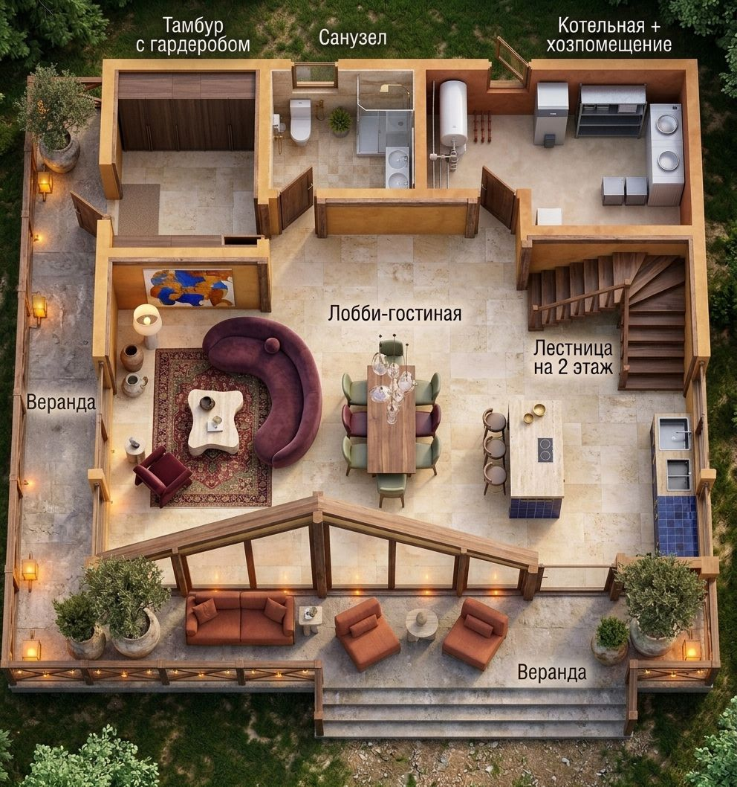<figcaption>3D-план 1 этажа: расстановка по исходной планировке</figcaption></figure>
  </div>
  <div class="trio">
    <figure><figcaption>Лаунж</figcaption></figure>
    <figure>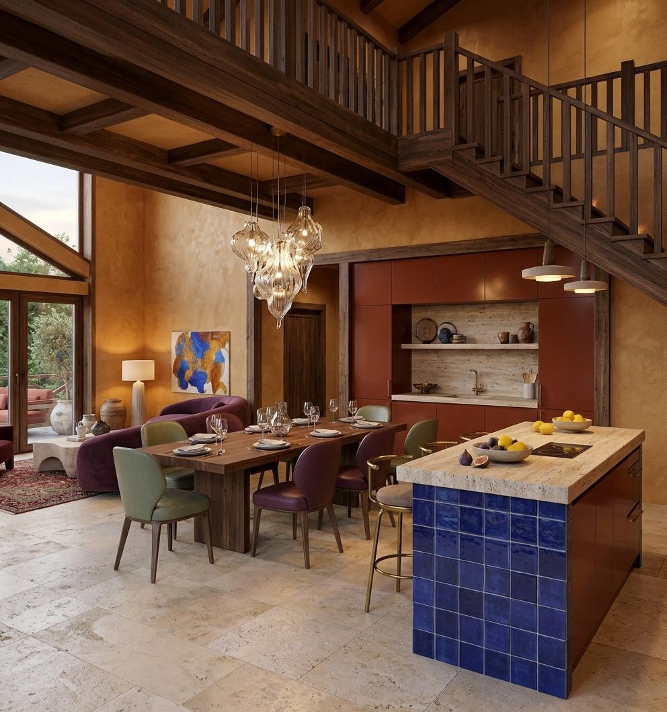<figcaption>Кухня и столовая</figcaption></figure>
    <figure>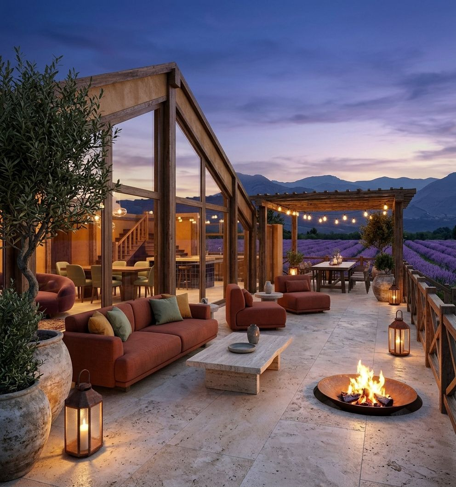<figcaption>Общая веранда вечером</figcaption></figure>
  </div>
</section>

<section class="wrap">
  <div class="two">
    <figure>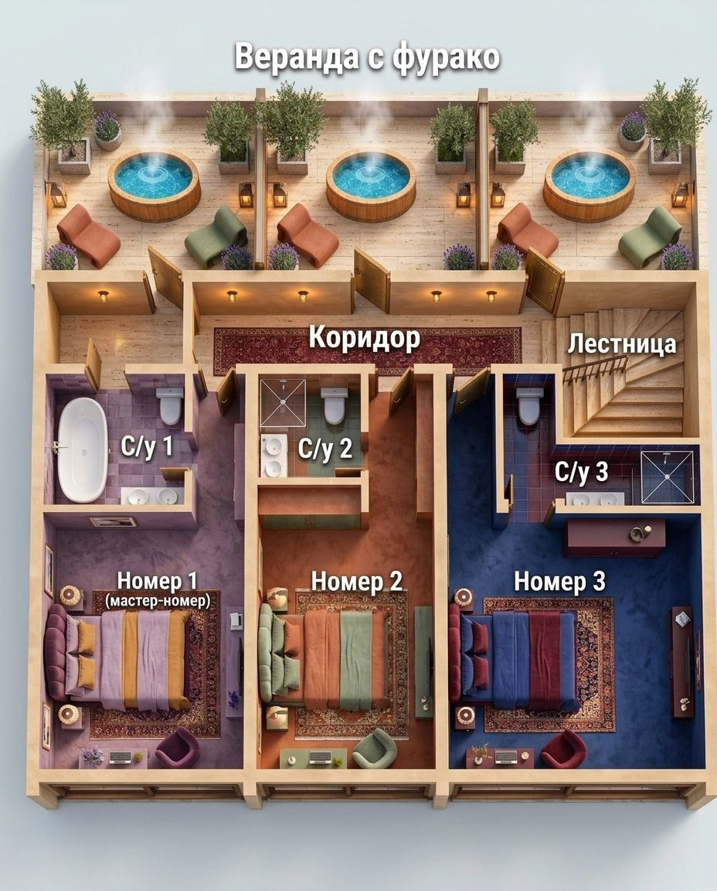<figcaption>3D-план 2 этажа: три цветовых сценария и приватные веранды с фурако</figcaption></figure>
    <div class="stack">
      <div class="eyebrow">2 этаж · 72 м²</div>
      <h2>Три номера с разным характером</h2>
      <p>Номера отличаются не только текстилем. Меняются цвет и фактура стен, форма изголовья, кресло, свет и керамика в санузле. Коридор нейтральный, песочный: двери номеров окрашены в цвет своего номера и сразу подсказывают характер.</p>
      <figure>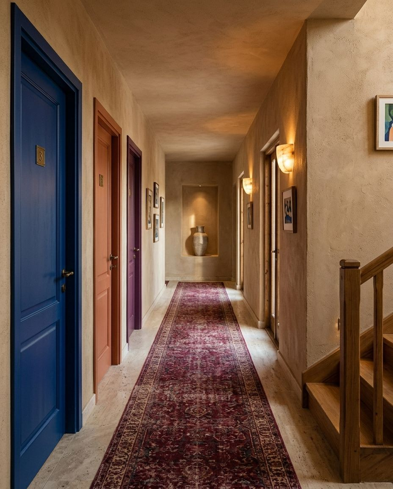<figcaption>Коридор: винная дорожка, алебастровые бра, двери в цвет номеров</figcaption></figure>
    </div>
  </div>

  <div class="rooms">
    <article class="room">
      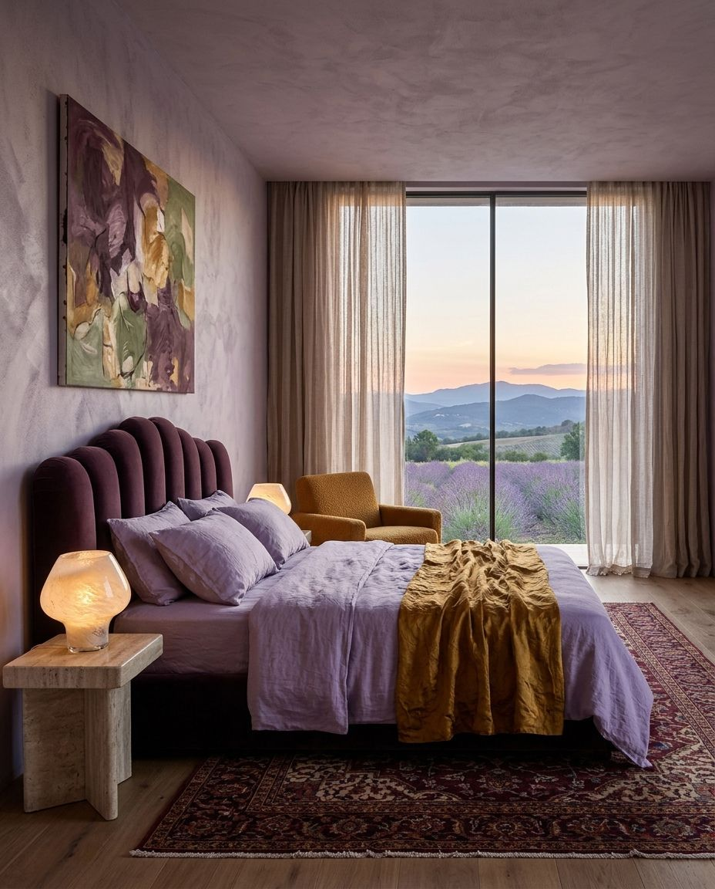
      <div class="dots"><i style="background:var(--lavender)"></i><i style="background:var(--plum)"></i><i style="background:var(--ochre)"></i></div>
      <h3>Номер 1 · «Слива и лаванда»</h3>
      <p>Мастер-номер на 23,1 м². Лавандовая штукатурка, стёганое изголовье из сливового бархата, охристое кресло из букле, травертиновые тумбы с муранскими лампами.</p>
    </article>
    <article class="room">
      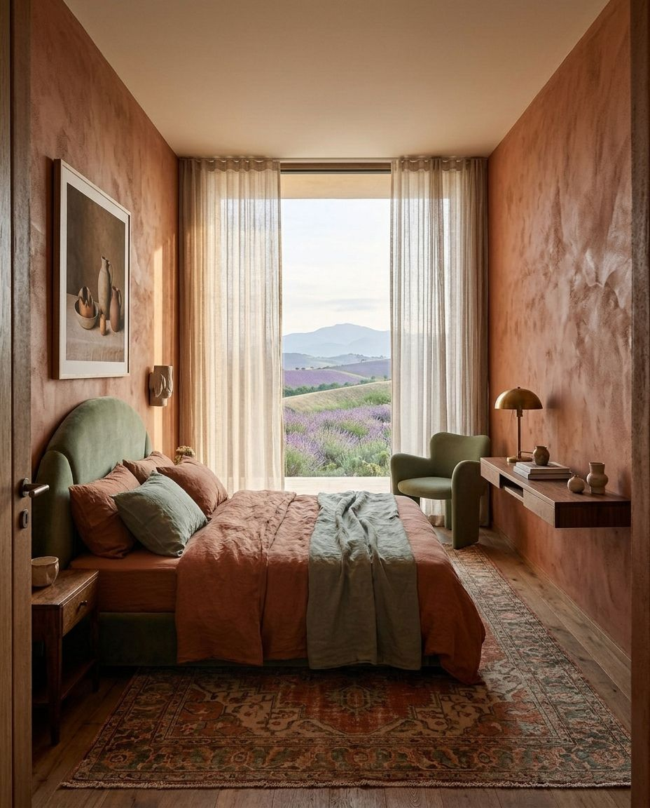
      <div class="dots"><i style="background:var(--clay)"></i><i style="background:var(--sage)"></i></div>
      <h3>Номер 2 · «Глина и шалфей»</h3>
      <p>Самый тёплый, на 16,1 м². Стены цвета жжёной глины, округлое шалфейное изголовье, навесной стол из массива, керамическое бра.</p>
    </article>
    <article class="room">
      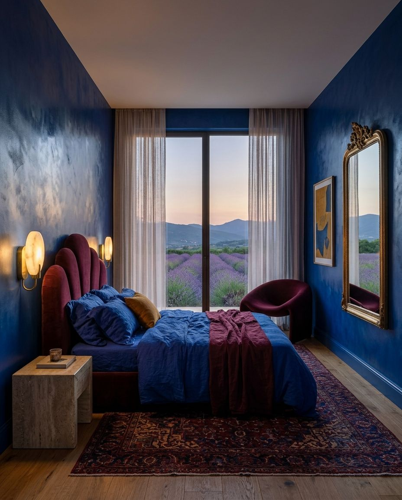
      <div class="dots"><i style="background:var(--cobalt)"></i><i style="background:var(--wine)"></i></div>
      <h3>Номер 3 · «Кобальт и вино»</h3>
      <p>Самый драматичный, на 17,0 м². Кобальтовая штукатурка, изголовье из винного бархата, алебастровые бра и винтажное зеркало в золотой раме.</p>
    </article>
  </div>
</section>

<section class="wrap">
  <div class="pair crop" style="margin-top:0">
    <figure>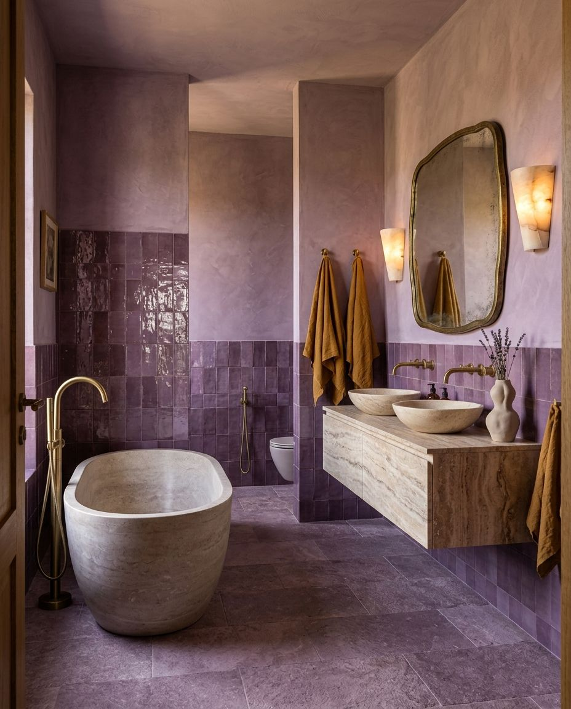<figcaption>Санузел номера 1: ванна из камня, сливовая глазурованная плитка, травертин, алебастр и латунь</figcaption></figure>
    <figure>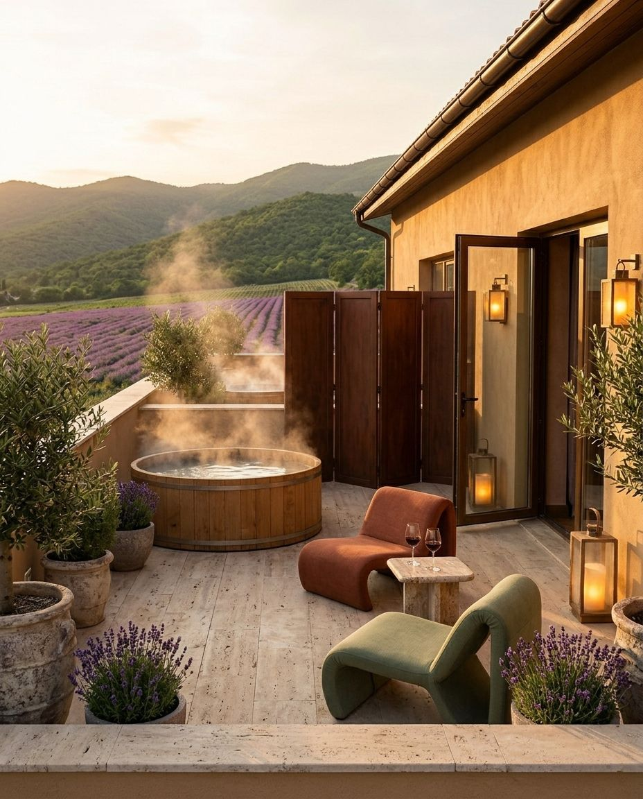<figcaption>Приватная веранда: фурако, скульптурные кресла, складная перегородка для приватности, вид на лаванду и горы</figcaption></figure>
  </div>
</section>

<section class="wrap">
  <div class="stack">
    <div class="eyebrow">Опыт гостя</div>
    <h2>Что заставит вернуться</h2>
  </div>
  <div class="guest">
    <div><h3>Свой цвет</h3><p>Три номера с разным характером: гость выбирает настроение, а в следующий приезд хочет попробовать другое.</p></div>
    <div><h3>Вечер в фурако</h3><p>Приватный чан, бокал вина, фонари и закат над холмами. Это главный кадр для соцсетей и главная причина бронировать.</p></div>
    <div><h3>Место, которое хочется снимать</h3><p>Каждая зона построена вокруг скульптурного предмета и вида за окном, поэтому любой ракурс выглядит как фото из журнала.</p></div>
  </div>
</section>

<section class="wrap">
  <div class="two">
    <figure>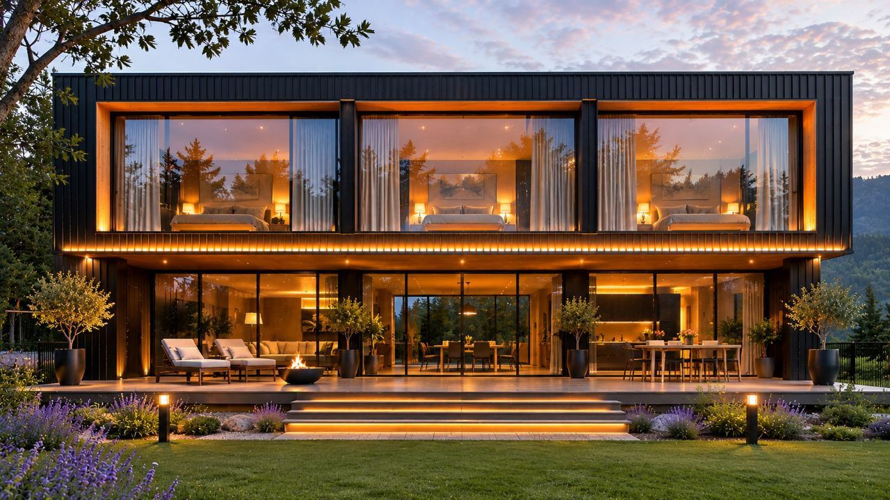<figcaption>Архитектура остаётся прежней: тёмный фасад, дерево, панорамное остекление</figcaption></figure>
    <div class="note">
      <div class="eyebrow">Статус и что учесть</div>
      <ul>
        <li>Это концепт-визуализации для согласования стиля, а не финальные фотореалистичные рендеры.</li>
        <li>В видах гостиной и кухни нейросеть нарисовала скатный потолок и антресоль. По проекту над гостиной второй этаж и потолок плоский, около 3,3 м. В финальной серии это нужно исправить.</li>
        <li>Веранда в рендере пристроена к оштукатуренной стене с черепицей, а по проекту фасад тёмный. Для финала нужно взять за основу архитектурные изображения.</li>
        <li>Ещё не проработаны тамбур, санузел 1 этажа, санузлы номеров 2 и 3, лестница.</li>
      </ul>
    </div>
  </div>
</section>

<footer class="wrap">Lavanda Hills · дизайн-концепция интерьера · визуализации MeltFlex по исходным планировкам · ноябрь 2026</footer>
